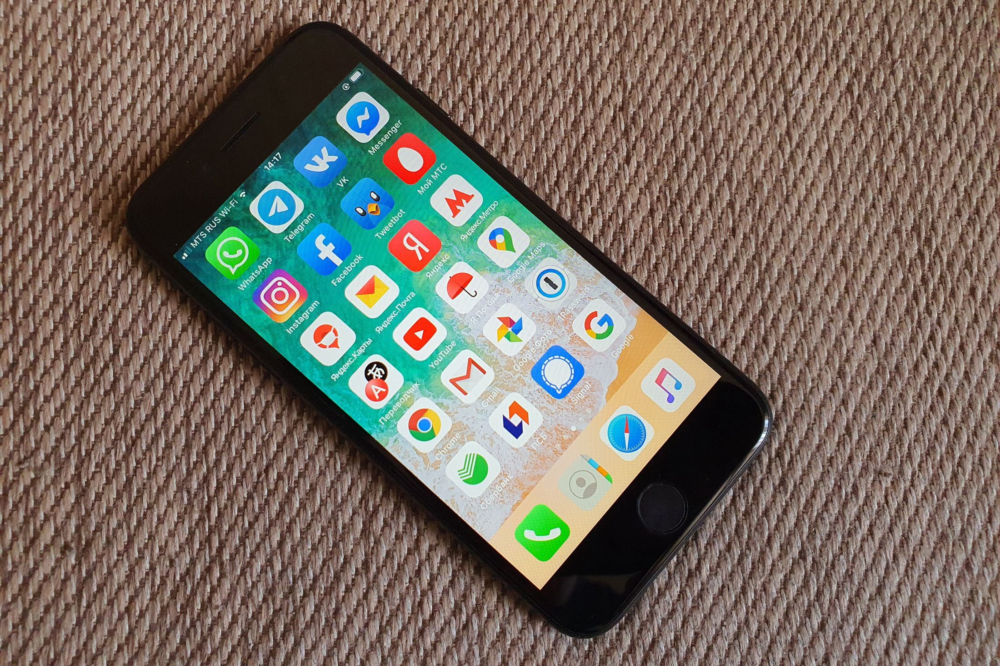
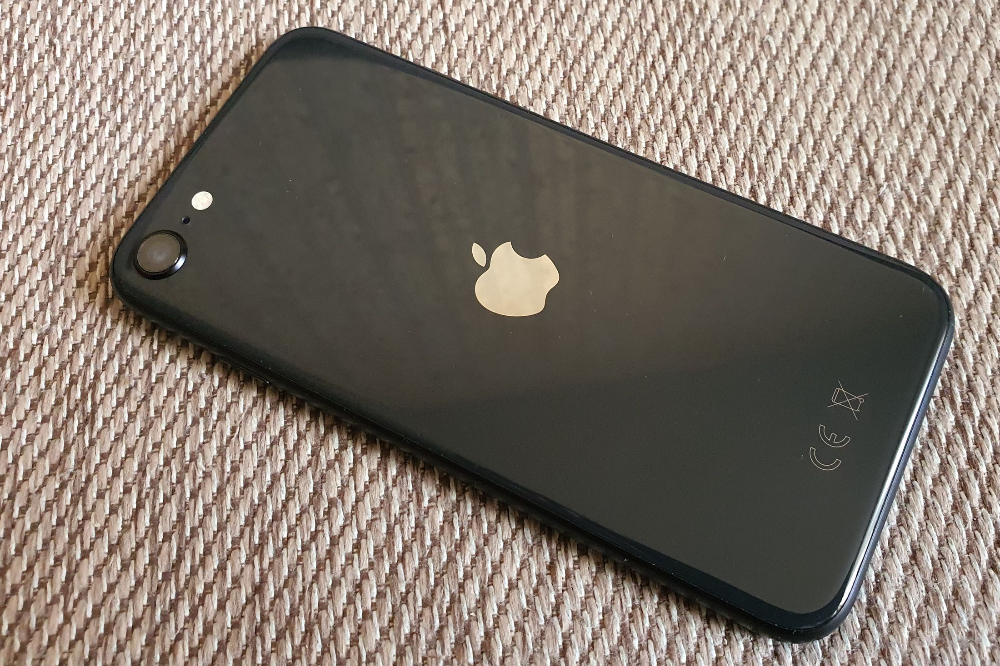
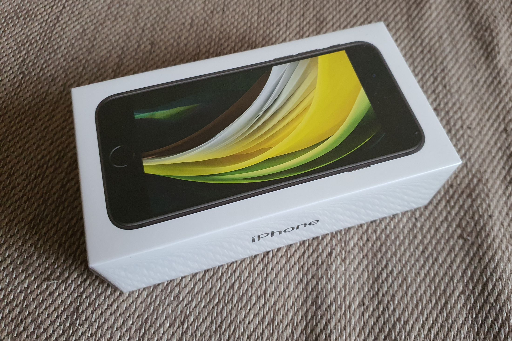
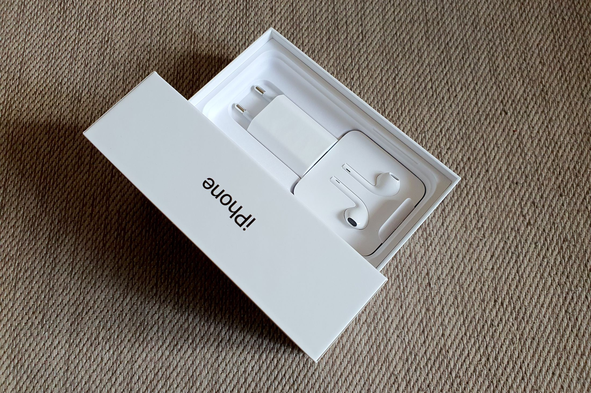

Я считаю, что выпускать полноценный обзор на устройство, когда ты проходил с ним всего три дня - это совсем неправильно. Здесь - о первых впечатлениях от нового смартфона Apple.

Когда берешь iPhone SE в руку, возникает давно забытое ощущение - каким же легким может быть телефон. Его вес составляет 148 граммов, после большинства современных моделей он буквально ощущается пушинкой. Что же еще входит в комплектацию смартфона помимо самого устройства? Наушники, которые подключаются через разъем Lightning, стандартная зарядка, бумажки-инструкции, и, конечно же, наклейки-яблочки.
Последние два с половиной года я пользовался iPhone X, и за это время компании из Купертино удалось сильно упростить "переезд" с одного iPhone на другой. Сейчас это делается максимально просто: вы подносите одно устройство к другому и сканируете картинку - все важные данные переносятся на новый девайс. Процесс занимает буквально десять минут. Остальная информация, например приложения, докачиваются из iCloud.
В новом iPhone SE стоит точно такой же процессор, как и у его старших братьев - A13 Bionic. Он очень мощный: в бенчмарке AnTuTu смартфон набирает 481040 баллов. В другом популярном тесте, GeekBench 5, iPhone SE набрал 1327 баллов в одноядерном тестировании и 2297 баллов в многоядерном. Это хороший результат.

A13 Bionic отлично оптимизирован с точки зрения энергопотребления. Заряд смартфона без проблем держится до самого позднего вечера. Так вышло, что первый рабочий день с этим смартфоном совпал с моим дежурством по номеру в "РГ": это очень много звонков и сообщений в различных мессенджерах в течение дня. iPhone SE достойно справился с этим испытанием - 5 часов 17 минут включенного экрана и 4 часа 8 минут с выключенным экраном. После 9 часов 25 минут у смартфона оставалось еще больше 30% заряда. Это отличный результат.
Камера нового устройства мне тоже понравилась. Она умеет снимать портреты, 4К-видео с частотой 60 кадров в секунду со стабилизацией. В своем ценовом сегменте iPhone SE нет равных по качеству съемки видео - все очень четко и плавно. К цветопередаче нет никаких претензий - все цвета натуральные, такие, какими мы их видим в жизни. В отличие от некоторых китайских производителей алгоритмы iPhone не делают мир прекраснее, а снимают его как есть.

Возможно, кому-то не хватит в iPhone SE трех камер, какие сейчас есть в iPhone 11 Pro и Pro Max. Но iPhone SE не про это. Он про то, чтобы, не заморачиваясь, сделать фотографию на бегу нажатием одной клавиши. Если вы хотите зум и ультраширокий угол, этот смартфон не для вас. Селфи "малыш из Купертино" тоже делает хорошо, вполне на уровне со старшими братьями.
Смартфон поддерживает eSIM. Вы не найдете ни один аппарат этой же ценовой категории, который обладает поддержкой данной технологии. В первую очередь eSIM оценят путешественники - практически в любой стране мира вы сможете подключиться к местному оператору.

Но хватит лирики. Самое время ответить на вопрос, для кого же выпущен iPhone SE. На ум приходят сразу несколько вариантов. Давайте о каждом из них по порядку:
Девушки, не являющиеся техногиками. Если ваша вторая половинка любит красивые вещи, которые отлично поместятся даже в самой маленькой дамской сумочке и при этом не ждет от смартфона возможностей съемки с зумом, на широкий угол, и чтоб в нем было "сто тыщ пятьсот камер" - iPhone SE станет отличным подарком. Он будет радовать очень долго.
Люди 45-50 лет, которые не гонятся за самыми последними технологиями и наворотами. Им важна простота использования, чтобы все функции выполнялись нажатием буквально двух-трех клавиш. Им iPhone SE тоже зайдет на ура.
Те, кто хотят попробовать окунуться в экосистему Apple, но при этом не переплачивать. В таком случае SE второго поколения ваш выбор. Это iPhone c самым демократичным ценником на сегодняшний момент - 39990 рублей за емкость в 64 Гб. За максимальную версию придется доплатить - модель на 256 Гб стоит 53390 рублей. Врочем, можно ограничиться и золотой серединой - 128 Гб за 44990 рублей.